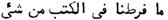
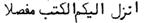

(from: Quran The Final Testament, by Rashad Khalifa, PhD.)
|
Which Hadith, other than God and His revelations, do they uphold? [45:6] The Quran is not a fabricated Hadith; ...it details everything. [12:111] Some people uphold vain Hadith to divert others from the path of God. [31:6] The only Sunna to follow shall be God's Sunna. [17:77, 33:62, 48:23, 6:114] |
The Quran informs us that some enemies of the Prophet, described as "human and jinn devils," will fabricate lies and attribute them to the Prophet (6:112, 25:31). This is precisely what happened after the prophet Muhammad's death; Hadith (oral) and Sunna (actions) were invented and attributed to the Prophet. Hadith and Sunna are satanic innovations because they: [1] defy the divine assertions that the Quran is complete, perfect, fully detailed, and shall be the only source of religious guidance (6:19, 38, 114 & 45:6-7), [2] blaspheme against the Prophet and depict him as a vicious tyrant who did not uphold the Quran, and [3] create false doctrines based on superstition, ignorance, and indefensible nonsensical traditions. The prophet Muhammad was enjoined, in very strong words, from issuing any religious teachings besides the Quran (69:38-48).
Some Muslims compromise: "If a Hadith agrees with the Quran we will accept it, and if it contradicts the Quran, we will reject it!" Such premise proves that these people do not believe God's assertions that the Quran is "complete, perfect and fully detailed." The moment they seek guidance from anything besides the Quran, no matter how "right" it seems, they fall into Satan's trap (see 63:1). For they have rejected God's word and set up another god besides God (18:57). See Appendix 33.
The Quran's mathematical miracle provides mathematical evidence that the Quran shall be our only source of religious teachings. Here are just 2 examples:
1. " = We did not leave anything out of this book," is in Verse 38 (19x2) and consists of 19 Arabic letters (6:38).
2. " = He sent down this book fully detailed," is in Verse 114 (19x6) and consists of 19 Arabic letters (6:114).